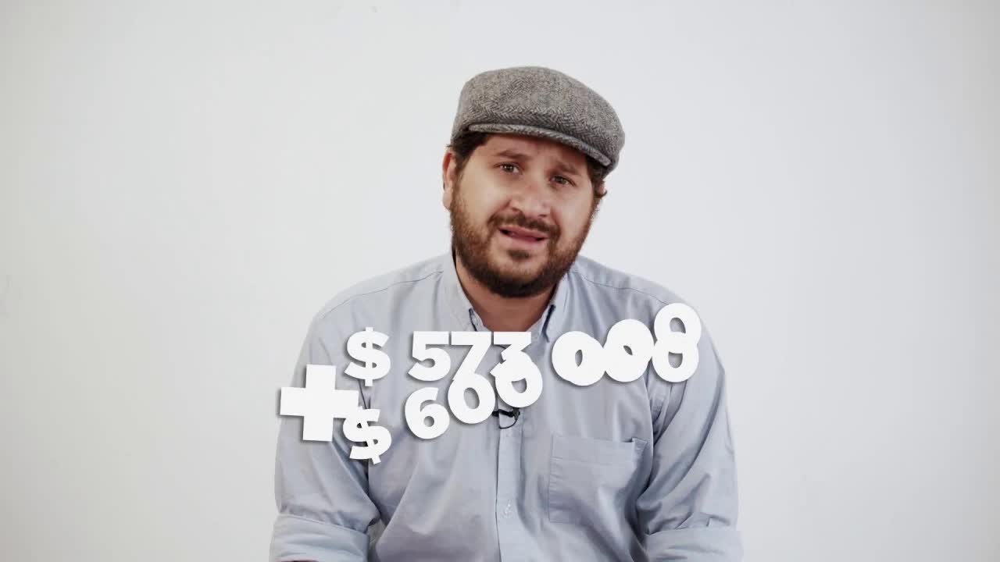
Entrega 2 · Metro de Quito y Ruta Viva
Odebrecht tenía un departamento para pagar coimas y un sistema informático para llevar la contabilidad. Se llamaba Drousys. Una fuente dejó una copia en una memoria externa, debajo de una Biblia, en el velador de un hotel de Quito. Cincuenta periodistas de diez países la trabajaron cuatro meses. En Ecuador mostró que la constructora había mentido a la Justicia.
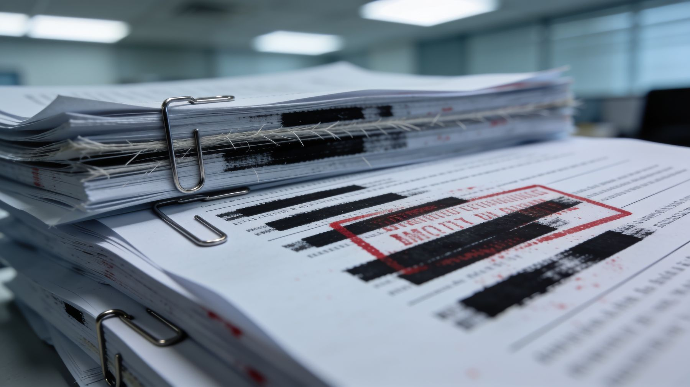
La historia de cómo llegaron los archivos también se contó. En enero de 2019 Boscán escribió al reportero Sasha Chavkin, del Consorcio Internacional de Periodistas de Investigación, y el ICIJ publicó después un detrás de cámaras con su relato. El Comercio de Perú reconstruyó la entrega: un hotel en Quito, los documentos debajo de una Biblia. Más de 50 periodistas de 10 países de América Latina y Estados Unidos trabajaron los 13.000 documentos. El portal Mil Hojas obtuvo por separado la misma información, según reconoció La Posta en su video de apertura.
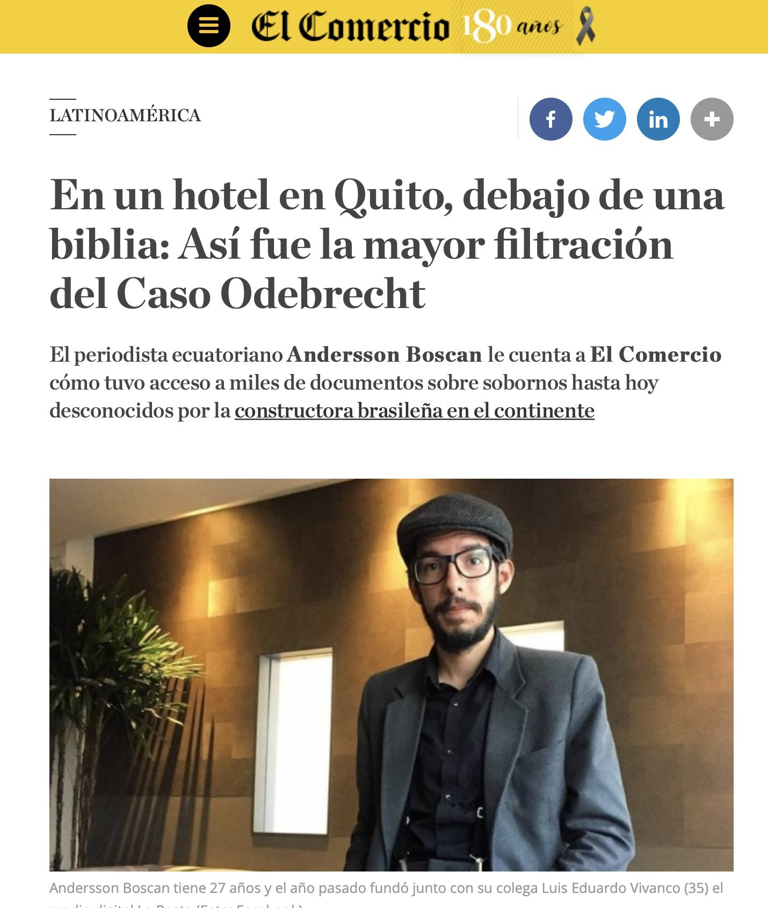
Odebrecht no pagaba coimas a la ligera. Tenía una oficina para eso, el Departamento de Operaciones Estructuradas, y un sistema informático cifrado para llevar la contabilidad de los pagos sucios: Drousys. Cuando el escándalo Lava Jato la alcanzó, la empresa firmó en diciembre de 2016 un acuerdo con el Departamento de Justicia de Estados Unidos: confesó 788 millones de dólares en sobornos en doce países. Para Ecuador reconoció 33,5 millones por cinco obras entre 2007 y 2016. A cambio de esa cooperación, sus ejecutivos recibieron beneficios judiciales. Con 77 ejecutivos delatores en varios sistemas de justicia, ninguno mencionó el Metro de Quito; José Conceição Santos, cuyo testimonio encarceló al vicepresidente Glas, tampoco.
Una fuente le dijo a Andersson Boscán, que entonces tenía 27 años y acababa de fundar La Posta con Luis Eduardo Vivanco, que la confesión era incompleta. Convencerla de entregar lo que tenía le tomó seis meses. La entrega fue en una habitación de hotel en Quito: una memoria externa debajo de una Biblia, en el velador. Adentro había 33.000 archivos de Drousys. El material los desbordaba. En enero de 2019 Boscán escribió a Sasha Chavkin, del Consorcio Internacional de Periodistas de Investigación, un correo con un asunto de dos palabras: Important investigation.
La compañía ocultó intencionalmente información a la justicia ecuatoriana e internacional en su cooperación eficaz, y esto es muy grave.
Andersson Boscán, 26 de junio de 2019
El ICIJ envió a Chavkin a Quito a verificar y copiar los archivos. Depurados, quedaron más de 13.000 documentos válidos: hojas de cálculo, estados de cuenta, correos y registros de transacciones entre operadores con nombres en clave como Bambi, Stalin o Robocop. El Consorcio armó un equipo de más de 50 periodistas de 10 países y 18 medios. En Ecuador, La Posta trabajó con El Universo y Mónica Velásquez formó parte del equipo: fue su primera colaboración con el ICIJ. La publicación fue simultánea el 25 de junio de 2019, a las once de la noche, hora del este.
Para Ecuador el hallazgo fue directo. Los sobornos sumaban 51 millones, no 33,5, y correspondían a siete obras, no a cinco: Refinería del Pacífico, Daule Vinces, el poliducto Pascuales Cuenca, el acueducto La Esperanza, la represa Manduriacu, y dos más que nunca habían entrado en ninguna investigación o habían salido limpias de ellas: el Metro de Quito y la Ruta Viva. Odebrecht había negado sobornos en esas dos obras. Los registros de uso de Drousys muestran que a mediados de 2016 alguien borró todo lo relacionado con ellas, antes de sentarse a cooperar con la Justicia. Según los penalistas consultados por La Posta, ese borrado ponía en riesgo los beneficios de los ejecutivos y hasta el acuerdo de Odebrecht con la justicia de Estados Unidos.

El Metro de Quito fue la obra más grande que Odebrecht se llevó en el país. El alcalde Augusto Barrera anunció el proyecto, contrató los estudios en septiembre de 2010, creó la empresa pública en 2012 y en 2013 dijo que costaría 1.492 millones. Drousys muestra que la constructora estudiaba el soborno desde 2013, dos años antes del pago: en noviembre de ese año firmó un subcontrato con una empresa española para preparar la ruta del dinero. El consorcio Acciona Odebrecht ganó la licitación bajo el alcalde Mauricio Rodas, que firmó el contrato el 26 de noviembre de 2015 por 2.009 millones, cuando Lava Jato ya había estallado: la norma obligaba a adjudicar a la oferta más barata, y la más barata era Odebrecht. Quinientos diecisiete millones más que los estudios. Drousys registra pagos por cinco millones de dólares: tres por propuesta y dos por éxito. Es el uno por ciento de esos 517 millones, el porcentaje habitual de la empresa. Un intercambio de correos de julio de 2015 entre el financiero de la empresa y su asistente, bajo alias, fija la cuenta: el dinero salió de Fortress Investor Limited en el Meinl Bank de Austria, un banco que Odebrecht controlaba. El beneficiario final no consta.
La Ruta Viva, la autopista que conecta Quito con los valles y el aeropuerto, ni siquiera había estado en la mira. Las planillas de la División de Sobornos anotan en octubre de 2012 un pago de 915.250 dólares vinculado a un contrato entre una compañía de Odebrecht en Islas Caimán y la brasileña Tucson Engenharia, socia investigada en Brasil, y en 2013 otros 573.000 y 600.000 disfrazados en un subcontrato. Más de dos millones. Barrera se deslindó en entrevista: la convocatoria y los pliegos se hicieron con la CAF, dijo, las liquidaciones de ambas fases ocurrieron ya en la administración de Rodas y jamás en la vida tuvo relación con esa gente. Sobre el Metro, Rodas respondió por escrito desde el extranjero que el proceso empezó en la administración anterior y que en 2013 se calificó a los consorcios; Barrera contestó que Odebrecht perdió la fase 1, que él suspendió la fase 2 sin abrir sobres y que la obra se contrató 500 millones por encima de los estudios. Odebrecht, Acciona y el exgerente de Obras Públicas Germánico Pinto no respondieron. La fiscal Thania Moreno, que llevaba la indagación previa del Metro, pidió su archivo horas antes de que SUMA, el movimiento de Rodas, entregara al Gobierno de Lenín Moreno los votos para elegir vicepresidenta a María Alejandra Vicuña, en enero de 2018; el archivo se formalizó el 27 de febrero, según la prensa. Consultada, dijo que necesitaba autorización de sus superiores para explicar por qué.
| Fecha | Obra o beneficiario | Monto | Ruta del dinero | Registro |
|---|---|---|---|---|
| 2012-10 | Ruta Viva, fase 1 | $ 915.250 | Odebrecht (Islas Caimán) → Tucson Engenharia, socia brasileña investigada en Brasil, factura 010 | Planillas de la División de Sobornos |
| 2013 | Ruta Viva, fase 2 | $ 1,2 M | Tucson → subcontrato con GT, 573.000 + 600.000 | Total Ruta Viva: más de 2 millones |
| 2013-08-21 | Pedro Merizalde | $ 150.000 | Field Services Ltd (Meinl Bank, Antigua) → Yorkfield Investment Inc (Royal Bank of Canada) | Primera de seis transferencias |
| 2013-11 | Pedro Merizalde | $ 170.000 | 100.000 por la misma ruta Field Services → Yorkfield (Odebrecht registra su devolución dos días después) + 30.000, 50.000, 50.000 y 40.000 desde Columbia Management | Total neto recibido en 2013: 320.000 dólares |
| 2014-10-23 | Poliducto Pascuales Cuenca | $ 1,6 M | Odebrecht → Ecuatoriano Suiza (prima) → Ocean Re (99,99 %) → Nashville Financial Corp → Credicorp Bank | Póliza en exceso, factura 002003-4337. Se repitió seis veces |
| 2015 | Metro de Quito | $ 5 M | Fortress Investor Ltd (Meinl Bank, Austria) → beneficiario sin identificar | 3 millones por propuesta, 2 millones por éxito. El 1 % de los 517 millones de sobrecosto |
| 2016 | Borrado | — | Registros de uso de Drousys | A mediados de 2016 se borró todo lo relacionado con Metro y Ruta Viva antes de la cooperación con la Justicia |
La segunda entrega describió un mecanismo que nadie había contado, y que Odebrecht llamaba fondear: cómo metía el dinero de las coimas al sistema bancario usando seguros. El 23 de octubre de 2014 la aseguradora Ecuatoriano Suiza, una de las quince principales del país, propiedad de José Suárez, le facturó a Odebrecht una póliza en exceso para cubrir el poliducto Pascuales Cuenca por 300 millones de dólares, vigente de 2014 a 2016 y firmada por las tres partes. Más de media docena de expertos del mundo asegurador la revisaron para La Posta. La prima: 1,619 millones. Como ninguna aseguradora ecuatoriana puede responder por esa suma, el riesgo se cede a reaseguradores internacionales. Lo normal es repartirlo entre varios. Ecuatoriano Suiza lo retrocedió casi entero, el 99,99 por ciento, a un solo reasegurador: Ocean Re, una compañía panameña con menos de cuatro millones de capital, autorizada en Ecuador en 2014 y sin autorización después.
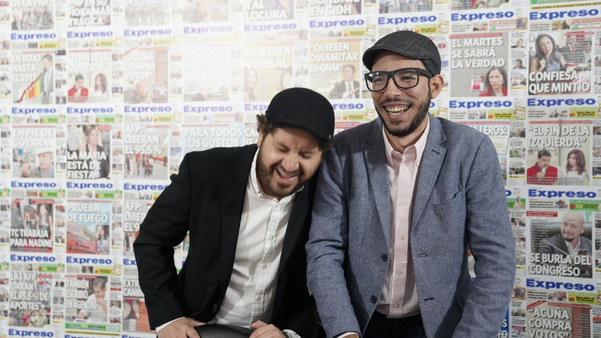
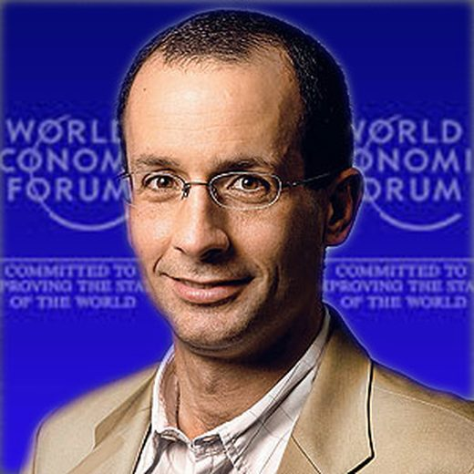
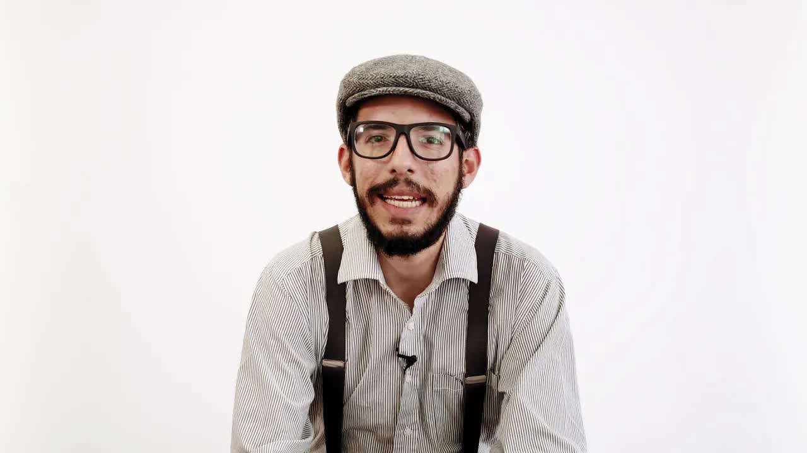
La operación se repitió al menos seis veces, según los documentos entregados por Ecuatoriano Suiza.
Ocean Re volvió a retroceder el riesgo, otra vez el 99,99 por ciento, a Nashville Financial Corp, una firma panameña que no está registrada en Ecuador y que no pertenece al mercado de seguros. Era una empresa de fachada de la propia Odebrecht. La constructora terminaba asegurándose a sí misma y, de paso, moviendo un millón y medio de dólares con respaldo legal y bancario hasta Nashville, que alimentaba el enjambre de offshores con las que se pagaban los sobornos. Las transferencias del Credicorp Bank lo muestran. Esa es la misma cantidad que Drousys registra como coimas por el poliducto ese año. La operación se repitió al menos seis veces. Si alguna obra se caía, unos documentos llamados releases liberaban a la aseguradora de pagar. Las seis obras aseguradas incluían Daule Vinces. El abogado de Ecuatoriano Suiza no descartó que su cliente hubiera actuado de forma ilegal: las pólizas se emitieron en bloque, por pedido de Odebrecht, con el reasegurador que la constructora traía. El broker de seguros de la empresa se deslindó.
La tercera entrega volvió sobre un nombre conocido. Pedro Merizalde, gerente de Petroecuador y ministro de Rafael Correa, había aparecido en los Panama Papers de 2016 como dueño de la offshore Yorkfield Investment. Admitió entonces que omitió declarar una empresa que, dijo, nunca funcionó; Correa lo defendió: no ha transado veinte centavos. Drousys muestra 320.000 dólares que llegaron directo a la cuenta de Yorkfield en el Royal Bank of Canada durante 2013 desde Field Services Limited, en el Meinl Bank de Antigua, y desde Columbia Management, otra empresa de la trama. En 2013 Merizalde era gerente de Petroecuador y firma autorizada de la Refinería del Pacífico, una de las siete obras con coimas. La justicia pudo descubrirlo en 2016, si la Fiscalía de Galo Chiriboga hubiera rastreado la cuenta. Merizalde estaba prófugo cuando se publicó.
El efecto fue rápido y corto. El 4 de julio de 2019 la Fiscalía pidió a la Corte Provincial de Pichincha reabrir el caso Metro de Quito. El 11 de julio, la fiscal general, el procurador Íñigo Salvador, el contralor y el secretario anticorrupción Iván Granda se sentaron por primera vez con las nuevas autoridades de Odebrecht para una reparación integral; la segunda reunión fue con la Secretaría del Agua. El Municipio de Quito, único contratante directo del Metro y la Ruta Viva, pidió entrar a la mesa; el gerente del Metro, Jorge Yáñez, renunció. En agosto el representante de la empresa, Félix Martins, dio su primera entrevista en Ecuador, en Café la Posta: pidió disculpas a los ecuatorianos, dijo que todo Drousys estaba en manos de la justicia de Brasil y Estados Unidos y que la empresa se había impuesto una restricción moral de no licitar. Boscán le recordó que ni la compañía ni un solo directivo habían sido procesados en Ecuador, ni siquiera por asociación ilícita, dos años después de que la Fiscalía empezara a negociar con ella en mayo de 2017. La empresa salió del consorcio del Metro. La obra se terminó y el tren funciona desde diciembre de 2023.
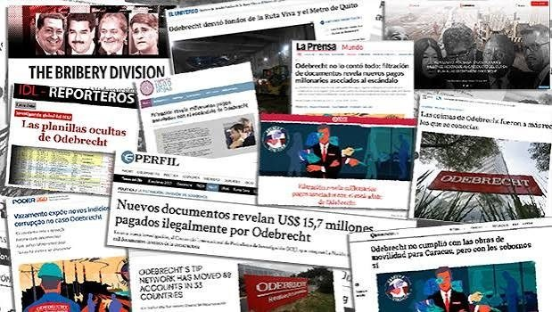
Después vino el silencio habitual. Nadie está hablando de la Ruta Viva, se dijo en La Posta en julio de 2019, y así siguió. No hay sentencia por el Metro ni por la Ruta Viva. Nadie ha identificado al beneficiario de los cinco millones del Meinl Bank. La Superintendencia de Compañías nunca informó de una auditoría a las pólizas de Ecuatoriano Suiza. Ocean Re fue investigada en Perú, no en Ecuador. Ni Odebrecht ni sus directivos fueron procesados en el país.
Lo que sí terminó fue el caso Sobornos, que nació de otra filtración, el archivo verde de Pamela Martínez publicado por Fernando Villavicencio y Christian Zurita como Arroz Verde. El 26 de febrero de 2020 la perito Alexandra Mantilla calificó la organización como una estructura criminal liderada por Rafael Correa, con Glas, Alexis Mera y María de los Ángeles Duarte como coordinadores. El 7 de abril de 2020 un tribunal condenó a ocho años a Correa, Glas, Mera, Duarte, Vinicio Alvarado, Walter Solís y una decena de empresarios, y les ordenó devolver 14,7 millones, con inhabilitación para candidaturas, disculpas públicas y un curso de ética. El 7 de septiembre de 2020 la casación lo ratificó. Correa vive en Bélgica; Alvarado, en Venezuela; Solís, en Estados Unidos; Duarte, en la embajada argentina y luego en Argentina. Ricardo Rivera, el tío de Glas que cobraba los sobornos, murió el 15 de enero de 2022 por complicaciones del covid; la Procuraduría pidió prohibir la venta de sus bienes. En febrero de 2022 La Posta revisó las cuentas: ninguno había pagado un centavo, y a Glas, con el 52 por ciento de la pena cumplida, una jueza le negó la libertad.
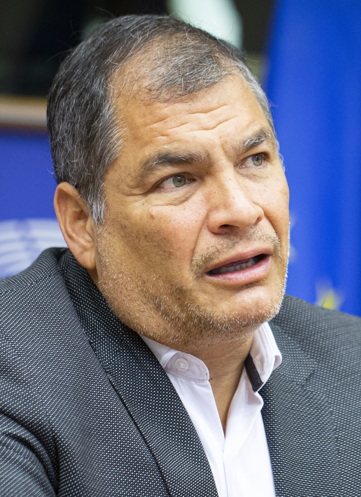
Actualizado el 5 de septiembre de 2026
Rodas firma con Acciona Odebrecht por 2.009 millones, 517 más que los estudios.
Drousys registra la eliminación de todo lo relacionado con Metro y Ruta Viva.
Drousys registra un subcontrato con una empresa española para preparar el pago del Metro, dos años antes.
Odebrecht reconoce 788 millones en coimas en 12 países; 33,5 en Ecuador.
La Fiscalía allana la empresa Metro de Quito. No encuentra nada.
La fiscal Thania Moreno pide archivar el Metro horas antes de la votación que hizo vicepresidenta a Vicuña.
La indagación del Metro queda archivada, según la prensa.
Seis meses de gestiones hasta la memoria bajo la Biblia.
Boscán escribe al ICIJ. Chavkin viaja a Quito.
Bribery Division sale en 18 medios de 10 países a la vez.
Metro y Ruta Viva; la ruta de los seguros; la offshore de Merizalde.
La Fiscalía pide reabrir el caso Metro de Quito.
Primera reunión de Fiscalía, Procuraduría, Contraloría y Anticorrupción con Odebrecht.
Correa, Glas y otros condenados a ocho años. Es otra filtración, otro caso; la perito Mantilla los llamó estructura criminal el 26 de febrero.
Ninguno de los sentenciados ha devuelto dinero.
Sin sentencia. El beneficiario de los cinco millones sigue sin nombre.
Recibió la filtración y la compartió con el ICIJ. Encabezó el equipo ecuatoriano.
Parte del equipo de La Posta que trabajó los documentos con el Consorcio.
Cofundador de La Posta. Primer llamado de Boscán tras recibir los archivos.
Reportero del ICIJ que viajó a Quito por los archivos.
Exministro de Rafael Correa con una offshore descubierta en 2016.
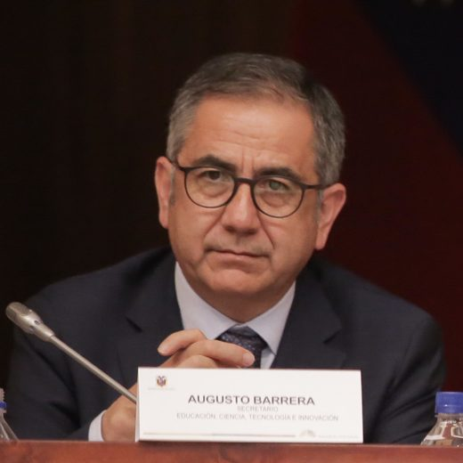
Alcalde de Quito 2009-2014. Contrató los estudios del Metro y convocó la Ruta Viva.
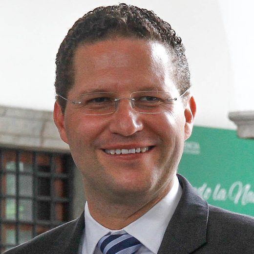
Alcalde de Quito 2014-2019. Firmó el contrato del Metro en 2015.
Fiscal que llevaba la indagación del Metro y pidió su archivo.
Dueño de Ecuatoriano Suiza, la aseguradora de la ruta de los seguros.
Representante de Odebrecht para varios países. Primera entrevista en Ecuador, en La Posta.
Fotos vía Wikimedia Commons. Augusto Barrera: Asamblea Nacional del Ecuador from QUito, Ecuador (CC BY-SA 2.0); Mauricio Rodas: Medios Públicos EP (CC BY-SA 2.0).
"La Posta reporter Andersson Boscán shared more than 13,000 files relating to Odebrecht with ICIJ", dijo el Consorcio al presentar la investigación.
Había calificado el caso Odebrecht como "el mayor caso de soborno extranjero de la historia".
Odebrecht perdió la fase 1 del Metro; él suspendió la fase 2 sin abrir sobres, con vigilancia del Banco Mundial, el BID y el BEI; la obra se contrató 500 millones por encima de los estudios. Sobre la Ruta Viva: 'jamás en la vida he tenido relación con esta gente'.
Por escrito, desde el extranjero: el proceso del Metro empezó en la administración anterior; en 2013 se revisó la planificación de siete consorcios y se calificó a cuatro.
Su abogado no descartó que se tratara de una actuación ilegal: los seguros se emitieron en bloque, por pedido de Odebrecht, con el reasegurador que la constructora traía; fue una decisión comercial.
Pidió disculpas a los ecuatorianos; dijo que Drousys íntegro está en manos de la justicia de Brasil y Estados Unidos, que seis ejecutivos cooperaron en Ecuador y que la empresa no participa en licitaciones por una restricción moral.
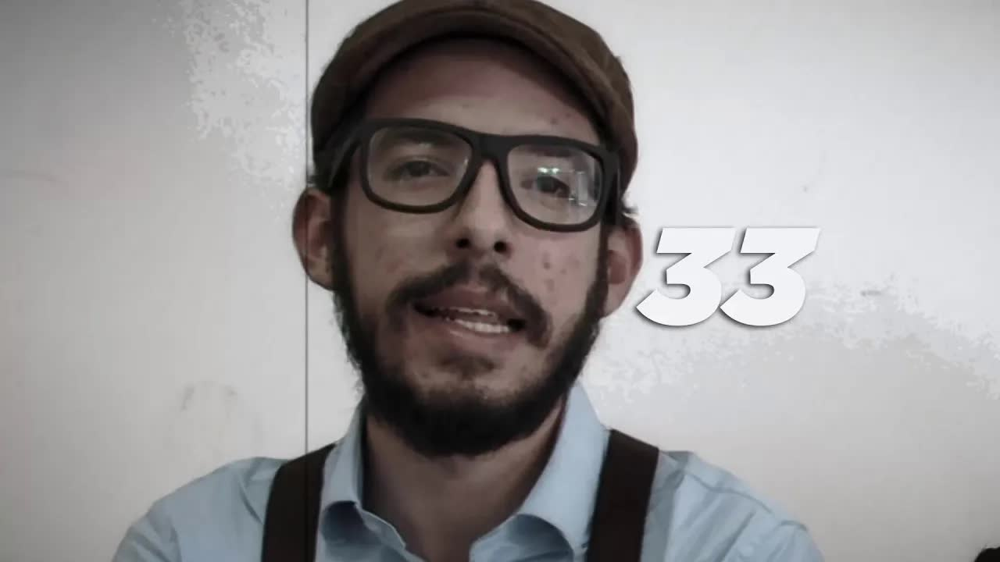
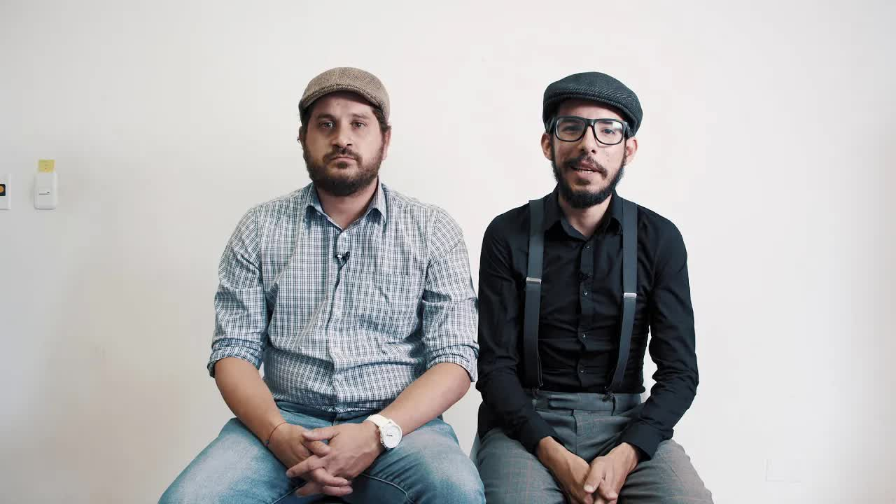
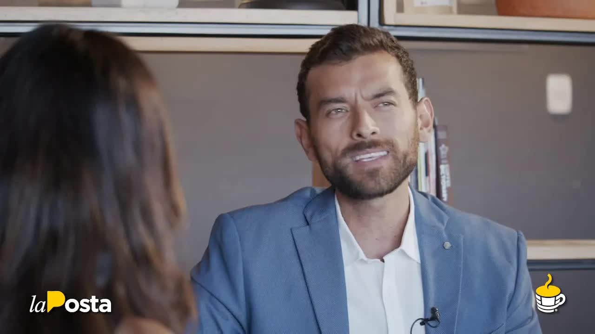
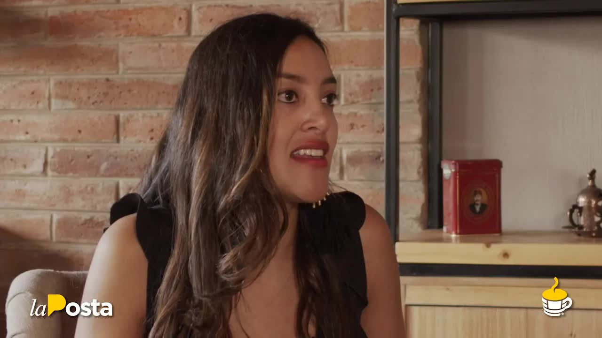
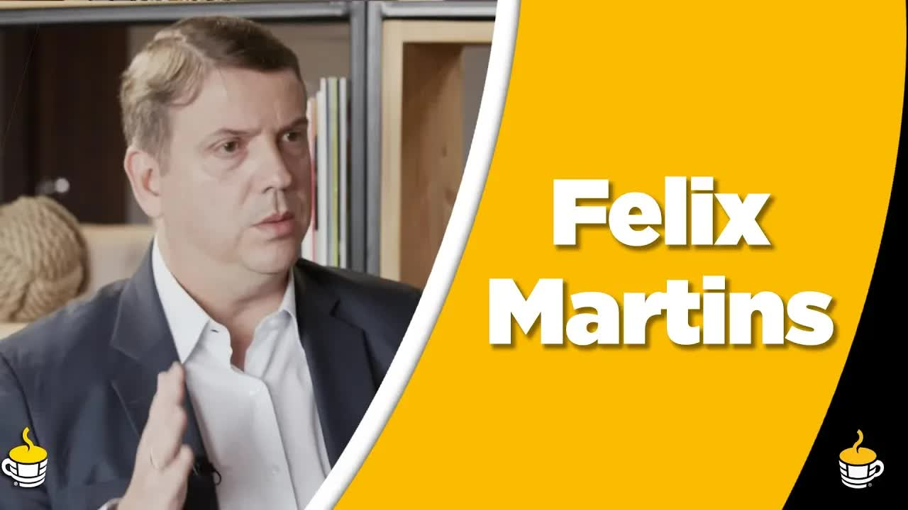
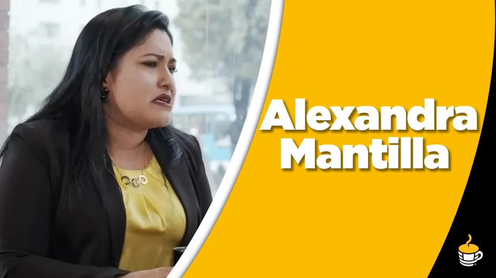
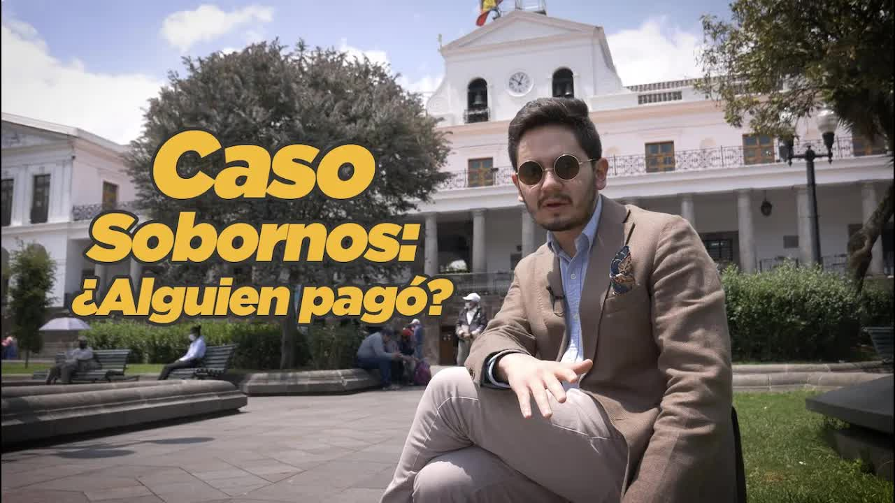
odebrecht era una empresa meticulosa robaba y cuidaba de una manera muy prolija si profesionales hasta en el lleve porque si vas a crear una red de sobornos y alcance de los principales autoridades del continente debes hacerlo bien la apuesta accedió al droid sis el sistema informático que creó de 'break' para llevar su registro de pagos sucios su contabilidad corrupta esto es la división de sobornos la posta accedió…
Leer la transcripción completael escándalo de la ola de corrupción de odebrecht casino de sobras intactas a su paso un ecuador el metro de quito y la ruta viva sobrevivieron al tsunami y pasaron de agache la justicia las consideró obras limpias sin hallazgos de corrupción hasta hoy unos 13.000 documentos del sistema de coimas de odebrecht obtenido por la poste y compartidos con el consorcio internacional de periodistas de investigación demuestran…
Leer la transcripción completaalguna vez te has preguntado cómo es que odebrecht lograba sacar el dinero de las coimas que pagaba a los funcionarios corruptos que la beneficiaban con contratos inflados como es que nadie se dio cuenta como podían incluso bancarizar esa plata los documentos secretos de odebrecht obtenidos por la apostó y compartidos más de 50 periodistas de 10 países a través del consorcio internacional de periodistas de investigac…
Leer la transcripción completarecuerdas a pedro merizalde un gerente de petroecuador mi año del rafa y de jorgito glass que ahora anda prófugo y por los techos los hubo un tiempo en que no formaba parte de instructor prófugos tiempos de revolución en 2016 el consorcio internacional de triste investigación le manchó la carrera revolucionaria cuando publicó los papeles de panamá y demostró que perito de élite rompe link que tenía una opción merizal…
Leer la transcripción completasus puertas cada mañana y nos permite darles las entrevistas y además nos brinda un café riquísimo quiere ser también es marta un grupo de abogados que están especializados en atender a emprendimientos así que si quieres abrir una contacto a los que ellos te podrán asesorar legalmente ahora amigos pues hemos de las noticias en caliente bien amigos en caliente continúan las denuncias en contra del nuevo presidente del…
Leer la transcripción completaescape alexis medel no va ni una semana completa con el resto domiciliario y con grillete y está intentando escaparse a lo fernando alvarado esperamos que esto no se repita y la justicia sepa cuidarlo para que no se escape como otros prófugos correístas de la justicia por otro lado en caliente ayer la fiscalía decidió abrir indagación previa en cuatro en contra de cuatro consejeros de participación ciudadana y entre …
Leer la transcripción completaescuchábamos a iván grandes secretar anti corrupción dar recompensa por por ver quién conoce el paradero de rafael correa que no sé si el tema que tendrá la dirección de bélgica todavía para que te ganes un billetito chema diciendo dónde está el rafa pero el gobierno intenta todavía mantener la lucha anti corrupción con una lucha bandera de cada día le es más difícil le es más difícil sobre todo por el nombre de una …
Leer la transcripción completatambién la división de dineros que es incluso donde yo empiezo a ver ya la aparición de códigos códigos que me llaman la atención en ese momento cojo las libretas de bakará y esto qué significa porque ella ya empieza a hacer las divisiones y en estas divisiones empieza a poner códigos ahí se empieza a ver la primera línea que tenemos un modus operandi por qué porque el modus operandi uno de los objetivos del mundo gr…
Leer la transcripción completaesta es la placa que nos recuerda que el correísmo nos robo cobrando coimas y sobreprecios a la constructora brasileña odebrecht uno de los rostros más importantes de esta telaraña corrupta perdió la vida el mes pasado y con él la plata choreada también hoy te vengo a contar qué ha pasado con los sentenciados del caso sobornos y se han pagado al menos un centavo el 7 de septiembre del 2020 el juez del tribunal de cas…
Leer la transcripción completaTranscripciones de los subtítulos automáticos de cada programa. No están corregidas a mano: sirven para buscar una frase y llegar al minuto exacto del video, no como cita textual literal.
La Fiscalía reabrió el caso archivado en 2018. Siete años después no ha llegado a juicio.
Los condenados del caso Sobornos deben 14,7 millones. No han pagado.
Los videos de La Posta se alojan aquí. La investigación completa del Consorcio está en icij.org/briberydivision.